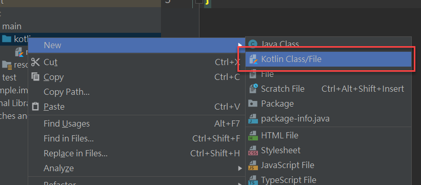
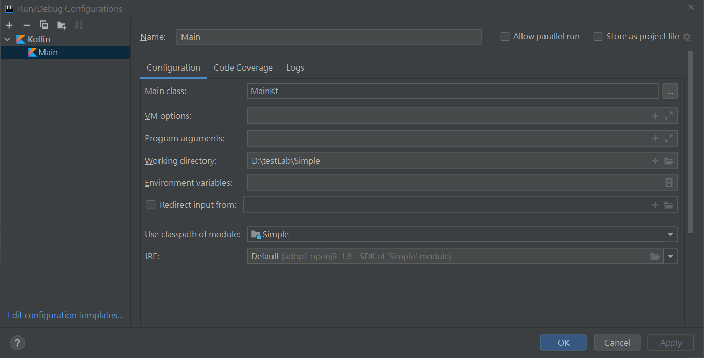
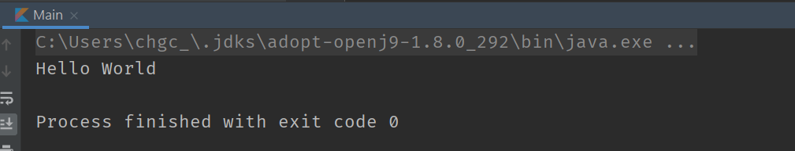
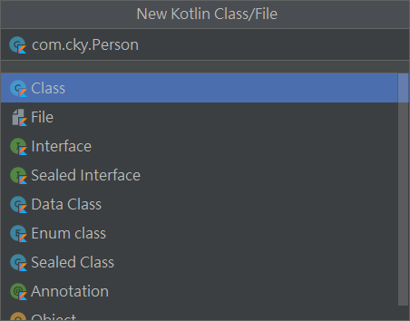
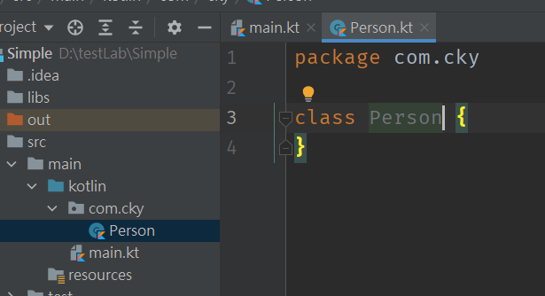

Kotlin 這語言名字最近一直出現在我的雷達中，但由於之前都不是走 Java 開發體系，當然就不會放在心上，但由於現在的工作基本上是走 Java 技術線，只好摸摸鼻子先來研究一下 Kotlin 這語言了
What is Kotlin?
- 跑在 JVM 上，是 JVM Language
- Object Oriented
- Functional, support Higher order function
- Less ceremony than Java, 語法比 Java 簡潔
建立學習環境
這邊使用 IntelliJ 來做學習 Kotlin 的環境工具
- New Project with Kotlin Template
- Project Name: 隨意
- Project Template: Application
- Project JSK 我選擇 1.8
- Next -> Finish 建立 Kotlin 專案
在 src 資料夾下會看到 main/kotlin 得資料夾但沒有 kotlin 檔案，所以先增一個 main.kt (.kt 為 Kotlin 檔案的附檔名)

在該檔案內增加一個 main function
1 | fun main(args: Array<String>){ |
要執行這一個檔案時， 需要先新增一個執行設定檔，Run -> Edit Configurations -> Add New Configuration

以上設定完後就能執行了。

建立第一個 package
一樣在 Source root 資料夾上新增一個 Kotlin 檔案，這時候可以連同輸入 package 的名稱，例如 com.cky.Person

這時候就會產生一個 Person.kt 檔案，並且建立 com/cky 得資料夾

使用方式如其他 import package 一樣
1 | import com.cky.Person |
1 | class Person(val name: String) { |
筆記
-
建立一個 class instance 不需要
newkeyword -
使用
varandval來決定變數是否能被重新定義，就像let和const，也可在 class 定義 property 時使用var==>let: mutableval==>const: immutable
-
string template 的使用法，使用方法如下，這裡的寫法跟 Dart 一樣
1
2
3
4
5
6fun display(val name: string){
println("display: $name");
}
或是
println("display: ${person.name}"); // 通常用於比較複雜的值，例如 ${objectClass.prop} -
if expression
1
var message = if(q.answer == q.correctAnswer) { "Correct" } else { "Wrong" }
-
null handle, Kotlin 會盡量讓使用者不要遇到 null 的問題，所以例如 String 是一個 non-null value. 如果要讓 property 可以接受 null 時，就要搭配
?
1 | class Question { |
同樣也可以使用 ?. 的方式來判斷是否能繼續往下執行，這點跟 TypeScript 的 ?. 是一樣的功能
1 | val q: Question? = Question() |
-
沒有
switch只有when1
2
3
4
5
6
7
8
9
10
11
12class Question {
var answer: String = ""
val correctAnswer = "Answer"
fun printResult() {
// 等同 if(q.answer == q.correctAnswer) { "Correct" } else { "Wrong" }
when (answer) {
correctAnswer -> print("Correct")
else -> print("Wrong")
}
}
}基本概念跟
switch一樣，也可以做到 pattern match 的效果1
2
3
4
5
6
7
8
9
10
11private fun whatItIs(any: Any) = when (any) {
is String -> {
val firstLetter = any.first() // smart cast, any is String now
println("It seems like words, it is $any and the first word is $firstLetter")
}
is Int -> {
val doubleValue = any * 2 // smart cast, any is Int now
println("It seems like a number, $any and multiply 2 is $doubleValue")
}
else -> println("Whatever")
}更多的寫法留在之後再深入研究
-
try block 的寫法也可以跟 If Expression 一樣
1
2
3
4
5val number: Int? = try {
Integer.parseInt(q.answer)
} catch(e: NumberFormatException) {
null
} -
looping
1
2
3
4
5
6
7
8
9
10
11
12
13
14
15
16
17
18
19
20
21
22
23
24
25
26
27
28
29
30
31
32
33
34// range of value
var range = 1..10
var range = 'a'..'z'
// for loop
for(i in 1..10) {
println(i) // 1,2,3,4,5,6,7,8,9,10
}
for(i in 10 downTo 1 step 2) {
println(i) // 10,8,6,4,2
}
for(i in 1 until 10) {
// 1 to 9 不包含 10
}
// loop list
var numbers = listOf(1,2,3,4,5)
for(i in numbers) {
...
}
// loop list with index
for((index, element) in numbers.withIndex()) {
...
}
// loop through map
for((key, value) in map) {
...
} -
No Checked Exception，但仍可透過 try catch 的方式捕捉到 exception